Stenalt
Gräulicher Granit
Höhe: 60 cm
Breite Seite A: 24 cm
Breite Seite B: 34 cm
Runenhöhe: 12 - 18 cm
Runeninschrift :
Azur, Stufs Sohn, errichtete diesen Stein zum Andenken an Brothir, seinen Sohn.
66 - Stenalt - Letztes Update 22.09.2025
Listennummer : DR 118 / DK MJy 55
| Navidaten: 56.50859 10.29105 oder: Stenaltvej 8, 8950 Ørsted |
Translitteration:
Seite A: [ąsur : st](u)(f)s : sun :
Seite B: [raisþi : st]ain : þąnsi | [auft : br](þ)(u)r : sun : sin :
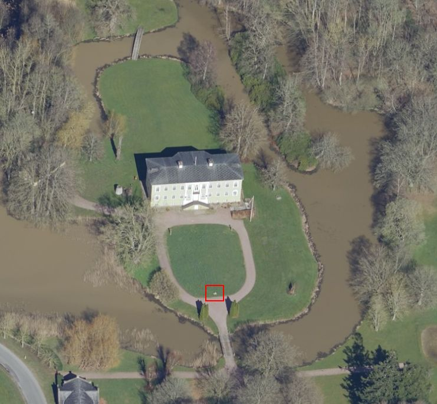
Das ist ein Luftfoto vom 01.04.2023 von Skråfoto das den Stenalt Herrenhof zeigt. Den Standort des Runensteins habe ich rot eingerahmt. Skråfoto ist eine Webanwendung, die von Klimadatastyrelsen weltweit kostenlos bereitgestellt wird - Freie Nutzung unter Beachtung der Lizenz: CC BY 4.0. Die Aufnahmen werden alle zwei Jahre erneuert und neben einer Senkrechtaufnahme wird ein Schrägbild aus jeder Himmelsrichtung angeboten, das man über eine Adresssuche aufrufen kann.
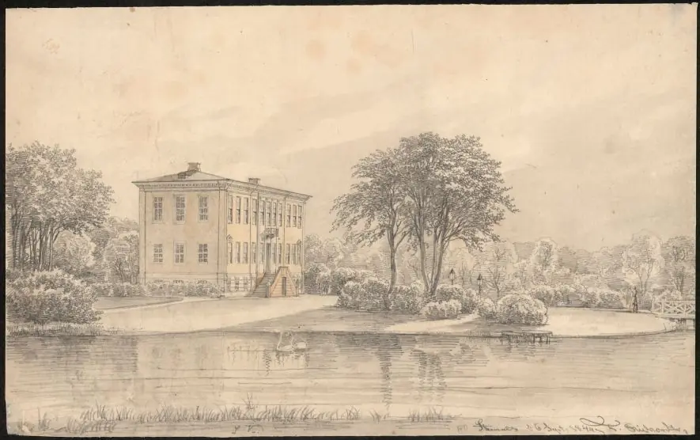
Bildquelle: Digitale Sammlung Nationalmuseum Kopenhagen - datiert auf den 06.09.1844 - Lizenz: Public Domain von Joachim Ferdinand Richardt (*10.04.1819 - 29.10.1895 in Oakland/USA, Künstler - link-LIVES)
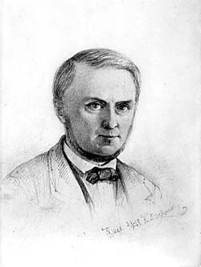
Bildquelle: Wikipedia - Lizenz: Public DomainIm Rahmen meiner 2022er Jütland Wikinger Tour habe ich am Mittwoch, 15.06.2022, den Weg zum Runenstein nach Stenalt gefunden. Die Grünfläche vor dem Herrenhof Stenalt war vor nicht allzu langer Zeit abgemäht worden. Von daher war die Standfläche des Runensteins durch Grashalme verunreinigt, so dass ich die erst einmal gesäubert habe. Die Steinoberfläche des Runenstein war in einem erbärmlichen Zustand! Viele Flechten in verschiedenen Farben haben sich inzwischen darauf angesiedelt. Da wohnt jemand in unmittelbarer Nachbarschaft von einem der ältesten Runensteine Dänemarks, unternimmt nichts dagegen und lässt den Stein so verkommen. Für mich völlig unverständlich! Der Steinkonservator - siehe unten - schreibt in seinem Bericht von 2018: "...gleichmäßig mit Algen und Flechten bewachsen ... Der Stein sollte mit Kalkwasser und Boracol Rh10 (Anm.: Mittel zur Vorbeugung und Bekämpfung von Algen, Moos und Schimmelbefall) von Bewuchs befreit werden. Zusätzlich kann eine kleinere Tafel mit der Runeninschrift aufgestellt werden. Alternativ sollte das Fragment drinnen entweder in Stenalt oder im nächsten Museum platziert werden...Pflegehinweise: Kann mit einer weichen Bürste und sauberem Wasser und Boracol Rh10 gewaschen werden." Es könnte so einfach sein!
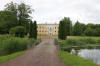 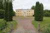 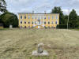 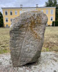 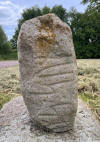 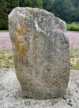 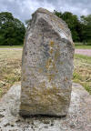
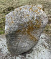 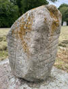 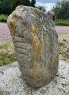 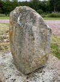 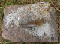 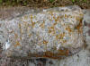
Die Fotografien im linken Frame sind nach meinen Unterlagen von meinem ersten Besuch in Stenalt vom Dienstag, 30.09.2003, wobei die Steinoberfläche schon damals wegen der Flechten usw. unschön aussah.
Von Ole Worm (*13.05.1588 - 31.08.1654, Arzt, Universalgelehrter und der Begründer der Runologie)
 Bildquelle:
Digitale Sammlung der Königlichen Bibliothek Kopenhagen -
Lizenz:
Public Domain
Bildquelle:
Digitale Sammlung der Königlichen Bibliothek Kopenhagen -
Lizenz:
Public Domain
war 1622 der dänische König Christian IV. (*12.04.1577 - 28.02.1648)
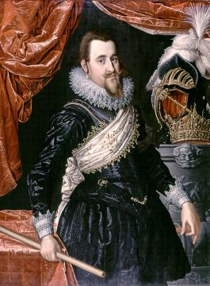
Bildquelle: Wikipedia - Lizenz: Public Domaindazu bewogen worden am 11. August 1622 einen Brief an die Bischöfe von Dänemark und Norwegen zu senden, um darüber die Pfarrer im Land aufzufordern alle Informationen zu Denkmälern, Runensteinen, Grabhügel usw. an ihn zu melden, um die älteste Geschichte Dänemarks zu beleuchten. Unterstützer oder gar treibende Kraft war wohl Christian Friis (*4. November 1581 auf Gut Krastrup in Farstrup - 01. Oktober 1639, dänischer Adliger und königlicher Kanzler)
 Bildquelle:
Wikipedia - Lizenz:
Public Domain
Bildquelle:
Wikipedia - Lizenz:
Public Domain
Der Originaltext dieses Briefes lautet auszugsweise: "Wor gunst tillforn. Wy bede Eder och wille, at I Eders mueligste flid ahnwender allewegne wdj Eders stigt att opsøge och antegne alle slags antiquiteter och documenter effter medfølgende fortegnelsis indhold, och att I saadanne med flid lader optegne och engang inden Paaske førstkommendis wdj wortt cantzelie lader indleffuere. Dermed skie wor willghe. Befalendis Eder Gud. Skreffuitt paa wortt [slott] Kiøbenhaffn, den 10. augusti anno 1622. Vnder vort signett.Christian."
Darüber findet dieser Runenstein von Stenalt seine erste Erwähnung im Jahre 1623 durch Albert Holst (Glaser in Hornslet) in seinem Bericht an die Kopenhagen der dazu auch die u.a. Aufzeichnung anfertigte. In den sogenannten "Præsteindberetninger til Ole Worm 1623-25", also den Rückmeldungen der örtlichen Pfarrer zu der o.a. Aufforderung, finden sich auch die Mitteilungen von Albert Holst. Die eingegangenen Mitteilungen wurden zu einem späteren Zeitpunkt zusammengeheftet. An deren Ende finden sich Holts Abschriften einiger Runensteine, mit Bleistift paginiert von 61-69: Randers 1, Framlev, Vejlby, Øster Alling, Gesing, Sønder Vinge 1 (Ulstrup), Stenalt (Nr. 67), Glenstrup und Gesing. Auf der Rückseite von seinen Stenalt Aufzeichnungen befindet sich die Anmerkung: "Albert Holst y hornslet, glarmester 1616". Wie Holst, dessen Namen in einem anderen Zusammenhang nicht überliefert ist, zu diesem Auftrag kam, bzw. warum er dies tat, oder wer ihm diesen Job gab, ist unbekannt.
Die Præsteindberetninger sind heutzutage online verfügbar unter: Frank Jørgensen, 1974, Præsteindberetninger til Ole Worm / 2 : Indberetninger fra Århus, Fyns og Lunde stifter 1623-25. Infos zu Holst Aufzeichnungen finden sich ab Seite 7ff. in der pdf-Datei. Die eigentlichen Aufzeichnungen sind darin aber leider nicht enthalten, da sie damals nur ein Anhang waren.
Zu der Zeit der ersten Info befand sich der Stein bereits im Areal des Herrenhofes von Stenalt.
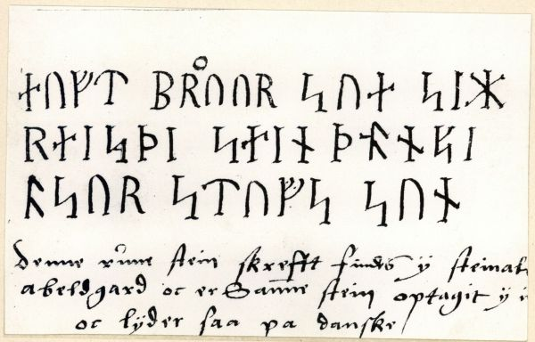
Digitale Sammlung Nationalmuseum Kopenhagen - Lizenz: Public Domain - Albert Holst y hornslet, glarmester 1616
Der komplette handschriftliche Text von Holts Aufzeichnung lautet: »Denne rune stein skrefft findes ÿ steinalt abeldgard oc er Samme stein optagit ÿ in høÿ oc lÿder saa pa danske: Denne stein er Reist oc Sat opa | broer legels høÿ at staa« | og med andet blæk herunder: »som viisser Diig hans graff« .
Quelle: Dissertation von Erik Moltke mit dem Titel "Jon Skonvig og de andre runetegnere. Et bidrag til runologiens historie i Danmark og Norge I-II, 1956-58" - Band II - 1958 - S. 178
Allerdings hat Ole Worm (*13.05.1588 - 31.08.1654, Arzt, Universalgelehrter und der Begründer der Runologie) den Runenstein wohl bei seinem Besuch 1615 bei der Gutsbesitzerin und Gelehrten Anne Krabbe (*29.07. (oder 22.08.) 1552 in Åstrup - 17.02.1618 auf Stenalt) auf Stenalt zuvor schon selbst begutachten können. Anne Krabbe wurde schon damals als eine der gelehrtesten Damen, die es je in Dänemark gab, bezeichnet. Sie soll den Umzug des Runensteins von einem kleinen Hügel aus der Umgebung in den Park des Herrenhofes Stenalt veranlasst haben.
Anne Krabbe wurde in der Ørsted Kirche bestattet - ca. 3 km südöstlich vom Herrenhof Stenalt gelegen - Luftbild über Skraafoto. Ihr Grabstein (270 x 181 cm) befindet sich heute in der Kirchenwand rechts hinter der Orgel.
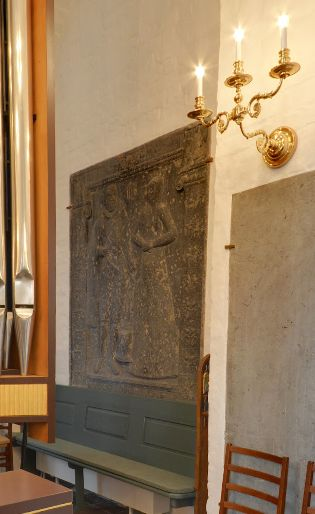
Bildquelle: Google Maps - Screenshot 21.09.2025 - Lizenz: CC BY-NC-SA 4.0Deren Grabstein wurde durch Søren Abildgaard (*18.02.1718 - 02.07.1791, Zeichner, Kupferstecher und Geologe)
 Bildquelle:
Königliche Bibliothek Kopenhagen
- Lizenz:
Public Domain
Bildquelle:
Königliche Bibliothek Kopenhagen
- Lizenz:
Public Domain
im Jahr 1769 gezeichnet.
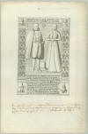
Darunter hat er noch diesen Text geschrieben: "Denne Gravsteen, som er af graa Marmor, er opreist paa Østlige Væg i det Begravelse Capell, som er opbygget paa Sydlige Side af Ørsted Kirke i Rougsøe Herred. S: Abildgaard A 1769." Übersetzung: "Dieser Grabstein aus grauem Marmor steht an der Ostwand der Grabkapelle, die an der Südseite der Ørsted-Kirche in der Provinz Rougsøe errichtet wurde. S: Abildgaard A(nno) 1769." - Quelle: Poul Grinder-Hansen - Søren Abildgaard (1718-1791) Fortiden på tegnebrættet - S. 495 - Nr. 524
Das schönste Silberstück der Ørsted Kirche ist ein alter Altarkelch.
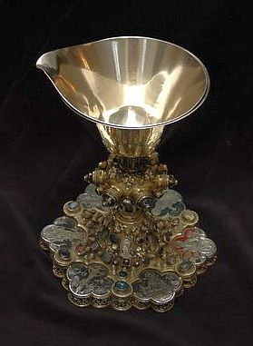
Bildquelle: Webseite - Erlaubnis zur Veröffentlichung am 22.09.2025 auf E-Mail Anfrage erteilt bekommen von Frank Gjesing - Tusind tak!Der Kelch stammt ursprünglich aus einem Satz von zwölf Kelchen im Dom zu Roskilde. Am Neujahrstag 1613 schenkte Anne Krabbe, die Witwe des seligen Jakob Bjørn von Stenalt, den Kelch der Ørsted Kirche. Der Kelch war ein Erbstück von Anne Krabbes Vater, Erik Krabbe. Er war als Kriegsbeute in Schweden in den Besitz der Familie gelangt. Damals wurde der Kelch in einem Birgittinerkloster in Vadstena gefunden. Wie die Schweden in Roskilde an den Kelch kamen, ist unbekannt. Der Kelch wird heutzutage an hohen Feiertagen in der Kirche verwendet.
Im Zusammenhang mit der Schenkung des Kelchs im Jahr 1613 hat Anne Krabbe in der Kirche, am nördlichen Chorbogen, eine Schenkungsurkunde mit vergoldeten Buchstaben anbringen lassen
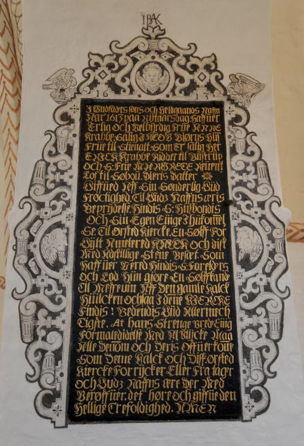
Bildquelle: Google Maps - Screenshot 21.09.2025 - Lizenz: CC BY-NC-SA 4.0die diesen Text trägt: "I Gudfaders, søns og helligånds navn, år 1613 på nytårsdag haver ærlig og velbyrdig fru Anne Krabbe, salig Jacob Bjørns husfrue til Stenalt, som er salig Erik Krabbe, ridder til Bustrup og fru Margrethe Reventlow til Søbo, deres datter givet af sin synderlige gudfrygtighed til Guds navns æres beprydelse, hendes salige husbonds og hendes egen evige ihukommelse til Ørsted kirke en sølvforgyldt kalk og disk med adskillige stene besat, som haver været hendes salige forældres, og lod hun gøre en sølvkande til messevin af den gamle kalk, hvilke også i denne kirke findes, bedendes Gud almægtigste, at hans strenge vrede, evige forbandelse med ulykke må ramme alle dem og deres efterkommere som fjerner denne kalk og disk fra Ørsted kirke, og Guds navns ære dermed berøver. Det høre og give den hellige trefoldighed. Amen."
Übersetzung: "Im Namen des Vaters, des Sohnes und des Heiligen Geistes hat am Neujahrstag 1613 die ehrbare und edle Frau Anne Krabbe, seligen Angedenkens als Frau des Jacob Bjørn zu Stenalt, Tochter des seligen Ritters Erik Krabbe zu Bustrup und dessen Frau Margrethe Reventlow zu Søbo, aus ihrer besonderen Gottesfurcht, zur Zier und Ehre des Namens Gottes und zum ewigen Gedächtnis ihres seligen Gatten wie auch ihrer selbst, der Kirche zu Ørsted einen silbervergoldeten Kelch samt Patene, mit mancherlei Steinen besetzt, gestiftet, welcher zuvor ihren seligen Eltern gehört hatte. Auch ließ sie aus dem alten Kelch eine silberne Kanne für den Messwein fertigen, welche ebenfalls in dieser Kirche vorhanden ist. Sie bittet den allmächtigen Gott, dass seine strenge Rache, sein ewiger Fluch und Unglück alle die treffe, samt deren Nachkommen, die diesen Kelch und die Patene aus der Ørsted Kirche entfernen und damit die Ehre des Namens Gottes schmälern.. Ehre sei der heiligen Dreifaltigkeit. Amen."
Die dänischsprachige Webseite "Gravsten og epitafier i danske og skånske kirker" bringt zur Ørsted Kirche / zum Geschlecht "Jacob Bjørnsen/Anne Krabbe" etliche Informationen.
Ole Worm berichtet dann zuerst in seinem 1636 in lateinischer Sprache erschienenen Werk "Runer seu Danica literatura antiqvissima" knapp über den Standort des Runensteins auf der S. 55 (2. Absatz von oben - "Stenhaltensi"). Dort heißt es in lateinischer Sprache nur kurz:
"...nam & ille qui in horto Stenhaltensi extabat partem suppeditavit." - (Vage) Übersetzung: "...im Garten von Stenalt ist einer (Anm. Runenstein) aufgestellt worden."
Er hat dann später diesen Metallschnitt gezeichnet und ihn 1643 in seinem herausragenden Werk "Danicorum Monumentorum Libri Sex", S. 289, veröffentlicht.
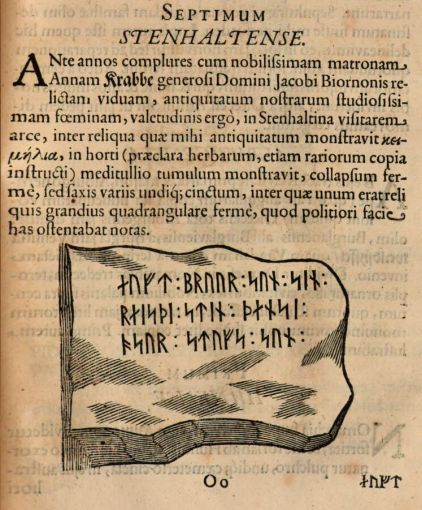
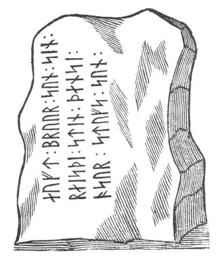
Er schrieb die Runeninschrift in drei Linien ab, ohne die genaue Form des Steins zu berücksichtigen und ohne einen Hinweis anzugeben, dass die Inschrift auf zwei angrenzenden Seiten des Steines angebracht ist. Der Metallschnitt zeigt also eine willkürliche Steinkontur. Da der Stein später in Stücke gehauen wurde, ist die tatsächliche, ursprüngliche Form unbekannt. Wenn man diese Zeichnung mit den Fotos des Runensteins vergleicht, kann man eigentlich nicht glauben, dass es sich um einen identischen Stein handeln soll. Auffällig ist allerdings die relative Übereinstimmung mit den abgezeichneten Runen in den drei Linien mit der o.a. Aufzeichnung von Albert Holst.
Die nächste Erwähnung des Runensteins findet sich bei Johannes Meier (1660, Lehrer und Verfasser) in seinem Werk Liber monumentorum Danicorum, qvi monumenta Danica Olai Wormii partim emendat partim locupletat (pdf-Datei anhand eigener Fotos von mir erstellt) von 1654 (Blatt 40) - Königlichen Bibliothek in Kopenhagen - GKS 2371 kvart


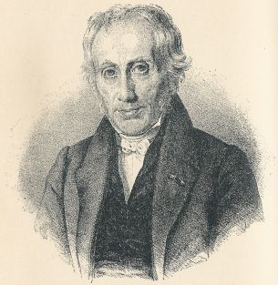
Bildquelle: Wikipedia - Lizenz: Public Domainhinzugefügt worden sein. Text und Zeichnungen der Handschrift - auch im Zusammenspiel - sind ansehnlicher ausgeführt als in NKS 799.
In der Königlichen Bibliothek in Kopenhagen hat sich von Johannes Meier aber auch noch eine zweite Handschrift erhalten - NKS 799 kvart - Joh. Mejeri Monumenta Runica in Dania (pdf-Datei anhand eigener Fotos von mir erstellt) . Deren Entstehungsdatum ist nicht bekannt. Der Runenstein findet sich auf Blatt 39.


#/media/Datei:Fotoreproductie_van_een_schilderij,_voorstellende_een_portret_van_Christian_Friis_til_Kragerup_Christian_Friis_(til_Kragerup)_(titel_op_object),_RP-F-2001-7-742-16.jpg){kind=link}


NKS 799 kvart - Joh. Mejeri Monumenta Runica in Dania - Papier - 44 Blatt, Blatt 41-44 unbeschrieben, aus dem 18. Jahrhundert, vormals Nr. 70 in der Manuskript Sammlung von Peder Frederik Suhm (*18.10.1728 - 07.09.1798)
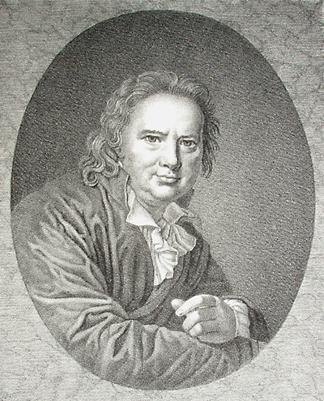
Bildquelle: Wikipedia - Lizenz: Public DomainEs handelt sich um
ein Büchlein mit einfachem Pappeinband, der Buchrücken ist aus
Leder und
verstärkte Ecken aus Leder weist der Buchdeckel auf. Es hat die
Maße: H: ca. 20
cm / B: ca. 17 cm / D: ca. 1,5 cm. Zu den einzelnen Zeichnungen im Büchlein
wurde ein einfacher Maßstab abgebildet.
Bei beiden Exemplaren
weist immer das rechte Blatt der Doppelseite in der oberen Ecke eine mit
Bleistift geschriebene Seitenzahl auf. Diese beiden Werke sind Abschriften von
früheren Werken, die die Zeit nicht überdauert haben.
Vielleicht sind sie in
Kopenhagen beim
Großbrand von 1728
vernichtet worden, als neben zahlreichen privaten Beständen auch ca.
35.000 Bücher der Königlichen Bibliothek
in
Kopenhagen ein Raub der Flammen wurden!
Die
GKS 2371 kvart soll laut
Prof. Ludv. F. A. Wimmer
(*07.02.1839 -
29.04.1920, Philologe und Runenforscher
-
link-LIVES -
Politiets registerblade
-
Bestattungsprotokoll)
 Bildquelle:
Fotografie zw. 1877-1900 von Fotograf Hansen & Weller
-
Det Kgl. Biblioteks billedsamling - Lizenz:
Public Domain
Bildquelle:
Fotografie zw. 1877-1900 von Fotograf Hansen & Weller
-
Det Kgl. Biblioteks billedsamling - Lizenz:
Public Domain
und seinen Infos von Christian Walter Bruun (*10.12.1831 - 28.02.1906, Königlicher Oberbibliothekar - link-LIVES)
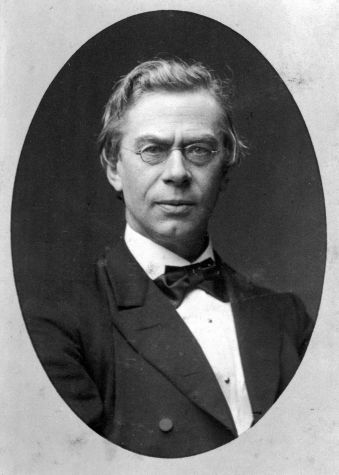
Bildquelle: Fotografie um 1880 von Fotograf J. Petersen (*19.03.1829 - 01.02.1905) - Det Kgl. Biblioteks billedsamling - Lizenz: Public Domain
von
Niels Foss selbst abgeschrieben worden sein. Er hat die Texte laut
den Studien von
Erik Moltke
(*04.04.1901 - 19.10.1984, Runologe, Historiker)
offenbar überarbeitet, verkürzt oder geändert und seine eigene
Orthografie eingebracht (z.B. alt: haffuer - bei Foss: haver / tyck/tyk /
kircke/kirke / oc/og u.a.).
In der
NKS 799 kvart hingegen steht auf der Seite 37 links unten "Niels
Knudsen Jerne" und seine Handschrift lässt vermuten, dass er die
gesamte Abschrift angefertigt hat. Er war offenbar ein professioneller Schreiber
und könnte mit dem Niels Knudsen identisch sein, der
1728 "Skriverkarl" auf dem Holmen (Stadtviertel von
Kopenhagen) war, also ein Mann der schnell viele Texte schreiben und liefern
konnte. Er wurde am 08.11.1737 zum "ekvipageskriver"
ernannt. Es scheint dass er sich entgegen
Niels Foss sehr eng an das Original gehalten hat.
Offenbar gab es laut dem Katalog über die Büchersammlung
von
Peter
Hansen Resens (*17.06.1625 -
01.06.1688)
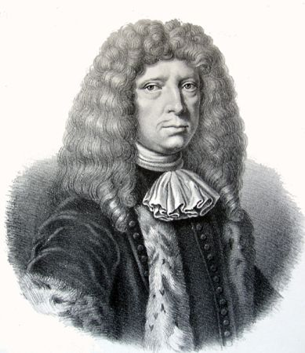
Bildquelle: Wikipedia - Lizenz: Public Domain"Bibliotheca
Regiæ Academiæ Hafniensi donata" Hafniæ (Kopenhagen) von
1685 - siehe
S. 273 - früher noch ein drittes Werk von
Johannes Meier mit dem Titel "Johan. Meieri
liber MS. de Monumentis Runicis sive antiqvis Danicics".
Quelle:
Erik
Moltke -
Jon Skonvig og de andre runetegnere. Et bidrag til runologiens historie i
Danmark og Norge I-II,
1956-58
Band 2
-
Kapitel 13
Zwischen Montag, 26.09.2022, und Mittwoch, 28.09.2022, habe ich in der Königliche Bibliothek - Den sorte Diamant - in Kopenhagen - u.a. diese beiden alten Handschriften nach Online-Vorbestellung zur Ansicht erhalten. Ich durfte mir Aufzeichnungen machen, sie aber auch uneingeschränkt fotografieren. Ich habe sie mit dem Smartphone komplett als Doppelseiten fotografiert und daraus jeweils eine pdf-Datei erstellt. Vielleicht hat ja jemand Bedarf an diesen seltenen Ausgaben, die aufgrund ihres Alters keinem Urheberrrecht mehr unterliegen.
Peder Hansen Resen (*17.06.1625 - 01.06.1688, Jurist und Historiker) hat mit dem von ihm über 20 Jahre gesammelten Material das großartige Werk "Atlas Danicus", bestehend aus letztlich 39 Folianten, geschaffen. Nur geringe Teile wurden aber zu seiner Lebzeit gedruckt. Die Bände wurden wenige Jahre nach seinem Tod 1692 an die Königliche Bibliothek Kopenhagen übergeben. Aufbewahrt wurden sie auf dem Dachboden der Trinitatis Kirche. Dort wurden sie fleißig studiert, abgeschrieben und zeitweise ausgeliehen. Leider wurde dann ein Großteil davon beim Kopenhagener Großbrand 1728 zerstört. Es hat sich neben einigen Originalseiten - siehe Arnamagnäanische Sammlung - AM 359 fol. / AM 360 fol. / AM 361 fol. und AM 362 fol. (digitalisiert) - nur eine (verkürzte) Abschrift und außerdem Kupferstiche von etwa 200 Städteansichten aus der Vogelperspektive erhalten. Originale dieser AM 359/360/361 fol sind über die Universität Kopenhagen - Institut for Nordiske Studier og Sprogvidenskab (NorS) - AM 359 fol / AM 360 fol / AM 360 fol (Karten) / AM 361 fol - in sw abrufbar. Eine zweite (verkürzte) Ausgabe war von Vincent Lerche (*04.04.1666 - 28.07.1742, Jurist, Architekt) beauftragt worden, diese wurde aber beim Brand von Schloss Christiansborg im Jahr 1794 vernichtet.
In der Königlichen Bibliothek in Kopenhagen wird seit 1803 in der Sammlung Uldall (186 folio) diese einzige verbliebene Ausgabe, die in den 1750er Jahren durch den Hofbaumeister Laurids de Thurah (*04.03.1706 - 06.09.1759)
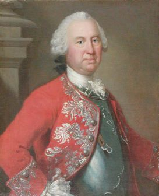
aus verstreuten Resten des Atlas Danicus in 7 Bänden rekonstruiert worden war, aufbewahrt:
Wie diesem Titel zu entnehmen ist, gehörte dieses Exemplar vormals Adam Gottlob Graf von Moltke (*10.11.1710 - 25.09.1792, Staatsmann, Diplomat)
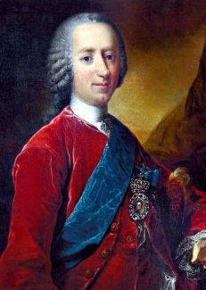
Bildquelle: Wikimedia - Lizenz: Public DomainNach dessen Tod erwarb Herman Treschow (*11.12.1739 - 02.05.1797, Professor für Theologie, Pfarrer) diese Ausgabe. Peter Uldall (*29.06.1743 - 11.11.1798, Jurist, Theologe)
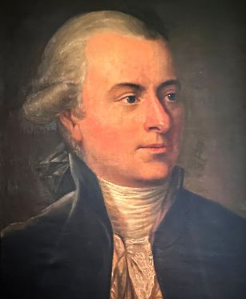
Bildquelle: Wikimedia - Lizenz: Public Domainwiederum kaufte sie für 170 Rigsdaler (Rigsdaler zu 24 Skilling - damals 1 ½ Mark) nach dessen Ableben. Er hatte aber nicht lange Freude daran, denn er starb ein Jahr später an einem Schlaganfall. Sein Sohn, Justizrat W. A. Uldall, schenkte diese Ausgabe der Kgl. Bibliothek im Jahr 1803, wo dieses großartige Werk noch heute verwahrt wird - Ein Band hat übrigens die stolze Größe H/B/D von 40 cm x 29,5 cm x 9,5 cm.
Im Atlas VI. ist auf der Seite 592-593 ein Eintrag / Zeichnung vom Runenstein enthalten, die ich am 28.09.2022 vor Ort fotografieren durfte.
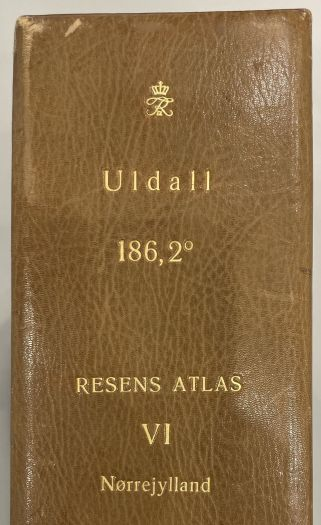
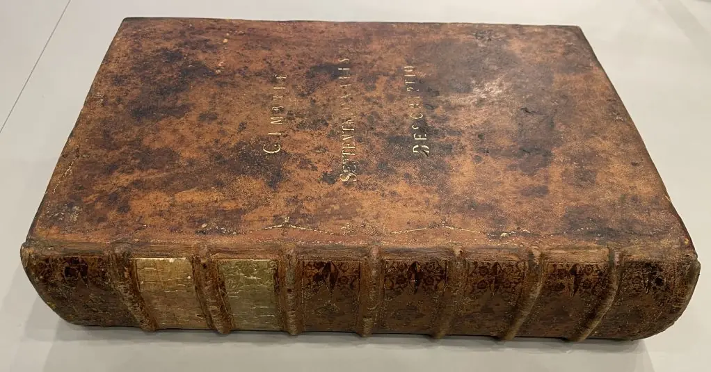


Auf der S. 592 unten, letzter Absatz, steht dann in lateinischer Sprache lediglich - übersetzt - "..im Garten des Herrenhofes Stenalt findet sich ein Runenstein mit dieser Inschrift: "Eust bruar Sun Sin reisdi stin densi o sex stufs Sun". Ole Worm übersetzte sie so: "In Erinnerung an seinen Sohn Brothir wurde dieser Stein von Azur, Stufs Sohn, gesetzt". Danach folgt auf der S. 593 oben die Zeichnung des Runensteins, wie sie bei Ole Worm 1643 in seinem herausragenden Werk "Danicorum Monumentorum Libri Sex", S. 289, veröffentlicht wurde.
Der nächste Bericht zu dem Runenstein stammt von Troels Arnkiel (Getauft 28.04.1638 - 07.09.1712, lutherischer Pastor und Altertumsforscher). In seinem im Jahr 1702 erschienen 4-bändigen Werk "M. Trogilli Arnkiels, Probsten und Pastoren zu Apenrade Jn dem Hertzogthumb Schleßwig-Hollstein/ Außführliche Eröffnung/ I. Was es mit der Cimbrischen und Mitternächtischen Völcker/ als Sachsen/ Gothen/ Wenden und Fresen ihrem Götzendienst/ Haynen/ Oraculen/ Zaubereyen/ Begräbnissen ... vor eine Bewandtniß gehabt/..." vor eine Bewandtniß gehabt/..." führt er im Theil 3 - Cimbrische Heyden Begräbnisse auf der Seite 337 aus (Zwecks der besseren Wiedergabe von mir zusammengeschnitten):
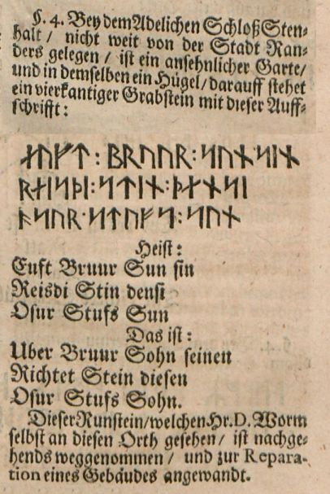
Dieser Runenstein fand auch Eingang im Jahre 1741 in Erik Pontoppidans (der Jüngere, *03.09.1689 in Århus - 20.12.1764 in Kopenhagen)
 Bildquelle:
Wikipedia - Lizenz:
Public Domain
Bildquelle:
Wikipedia - Lizenz:
Public Domain
großes Werk "Marmora Danica selectiora sive Inscriptionum". In diesem Bericht wird von ihm auf der S. 170 unten aus Ole Worms Werk Danicorum Monumentorum Libri Sex (S. 289) im Hinblick auf dessen Besuch bei Anne Krabbe auf Stenalt zitiert, als sie ihm Allerlei aus ihrer Sammlung und eben diesen Runenstein präsentierte.
Erik Pontoppidan macht auch in seinem Werk von 1768 "Den Danske Atlas" - Band IV - Cap. IX., Del 2, S. 457 (S. 15 oben in der pdf-Datei) - Ausführungen zur Existenz des Runensteins (übersetzt) "...als Frau Anne Krabbe auf Stenalt wohnte, lag mitten im Garten ein Runenstein, der zuvor auf einem Grabhügel außerhalb des Hofes gestanden hatte, er wurde von Ofur oder Adser, Stufs Sohn, für seinen Sohn Broder errichtet..." und verweist dabei auch auf Ole Worm - "Monumentorum Danicorum Libri Sex, 1643" - (S. 289).
Johan Gustav Liljegren (*27.02.1791 -02.06.1837, schwedischer Nationalarchivar und Archäologe)
 Bildquelle:
Schwedisches Reichsarchiv - Lizenz:
Public Domain
Bildquelle:
Schwedisches Reichsarchiv - Lizenz:
Public Domain
führt den Runenstein in seinem Werk "Run-Urkunder" von 1833 auf der S. 171 mit der Nummer 1502 an.
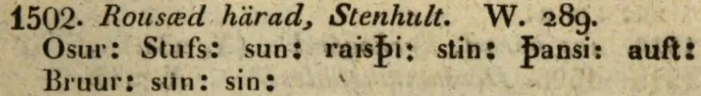
Dieses Werk findet sich in einer digitalisierten Ausgabe im Internet über die Bayerische Staatsbibliothek / MDZ Münchener DigitalisierungsZentrum Digitale Bibliothek - urn:nbn:de:bvb:12-bsb10431145-1 - Screenshot vom 07.03.2023.
Finnur Magnusson (dänisch auch Finn Magnusen; * 27. August 1781 in Skálholt/Island; 24. Dezember 1847 in Kopenhagen, isländischer Philologe und Archivar - link-LIVES)
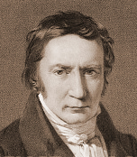
Bildquelle: Wikimedia - Lizenz: Public Domainhat in seinem Werk "Runamo og runerne" aus dem Jahr 1841, auf der S. 553 zu der Fußnote **) einige Anmerkungen zu dem zu seiner Zeit noch verschwundenen Runenstein von Stenalt veröffentlicht. Er bezieht sich dabei auf eine Reise von Cap. August Baggesen (Frederik Ludvig August Haller von Baggesen, *14.08.1795 - 18.04.1865, Biograph und Generalmajor - link-LIVES - Begräbnisprotokoll)
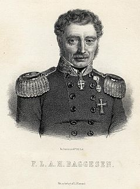
aus dem Jahr 1837, zu der dieser einen Bericht an die Altertümerkommission in Kopenhagen schickte. Baggesen berichtet darin über die Runensteine von Rimsø, Stenalt (...fand ich nicht... - erst 1913 wiederentdeckt!) und Hobro.
Sowohl Ludv. F. A. Wimmer als auch Lis Jacobsen/Erik Moltke berichten in ihren Runenwerken, dass Finnur Magnusson in seinem Buch "Runamo og Runerne, 1841" anhand dessen Bericht über den Neufund berichtet. Danach sei dieses Dokument aber leider verschwunden. In der Hinterlassenschaft des Professors P. G. Thorsen (*07.08.1811 - 06.05.1883, Bibliothekar, Runenforscher und Historiker) in der "Kgl. Bibliotek" in Kopenhagen fand ich am 27.09.2022 in der Pappschachtel Nr. 6 den verschollenen Bericht! Da Finnur Magnusson an der o.a. Stelle über dessen Besuch in Stenalt und Hobro berichtet, sollte es der Beweis dafür sein, dass es tatsächlich der als verschollen geglaubte Bericht ist! Offenbar fehlt aber erwas davon, da es mit 2) zum Runenstein von Rimsø losgeht. Unter 3) macht er dann Ausführungen zu dem Runenstein von Stenalt und unter 4) zu dem von Hobro. Darunter hat er mit "Aug. Baggesen" unterschrieben. Vielleicht habe ich da auch etwas in der Schachtel 6 übersehen / nicht beachtet. Dessen Zeichnung des Runensteins von Rimsø, die er mitgeliefert hatte, habe ich im Fundus von P. G. Thorsen auch nicht entdeckt.

Erst im Jahre 1913 fand man ein größeres Bruchstück des Runensteins in einem kleinen, mit Steinen ausgekleideten Graben im Hof des 1865 erbauten des Neusiedlerhofs Christianelund, der zum Gut Stenalt gehörte, wieder, nachdem er zuvor Jahrhunderte verschwunden war. Hofjägermeister Jørgen Christian Julius Vilhelm Bruun (*07.08.1858 - 21.05.1934, Gutsbesitzer von Stenalt - link-LIVES) - Anmerkung: Hofjägermeister war der Titel ausgewählter Grundbesitzer, die am Hof bei den königlichen Jagden mitwirkten -
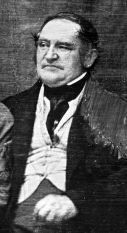
Bildquelle: Digitale Sammlung der Königlichen Bibliothek Kopenhagen - Lizenz: Public Domain - Fotograf: Peter Elfelt - um 1911ließ ihn daraufhin im Park von Stenalt aufstellen. Eine Untersuchung des Steins im Jahre 1913 erbrachte keine neuen Ergebnisse. Heute steht der Runenstein im Park des Gutshofes auf einem Sockelstein vor dem gelben Herrenhaus im italienischen Bausteil von 1799. Der Rest des Steins wurde vergeblich gesucht.
Die Geschichte von Stenalt reicht nun schon 800 Jahre zurück und noch heute steht im Park eine Eiche aus dieser Zeit mit einem 6 m dicken Stamm! Der Runenstein wird auf die Zeit zw. 900 und 1000 in die Wikingerzeit datiert. Die Schmalseite des Fragments wird zuerst von unten nach oben, die beiden Linien auf der links angrenzenden Seite werden in paralleler Reihenfolge und zwar von rechts nach links und unten nach oben gelesen: "[ąsur : st](u)(f)s : sun : Side B [raisþi : st]ain : þąnsi | [auft : br](þ)(u)r : sun : sin :"
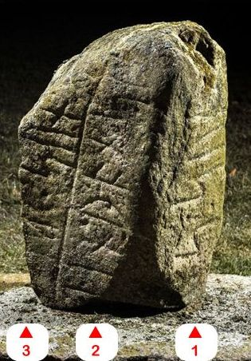
Bildquelle: Digitale Sammlung Nationalmuseum Kopenhagen - Lizenz: CC-BY-SA - Fotograf Roberto FortunaVon cand. mag. Frederik Johannes Henrik Orluf (*04.02.1869 -11.09.1954, Lehrer und Hobbyforscher)
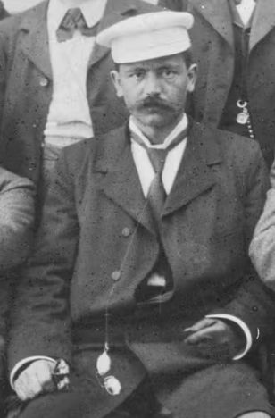
Bildquelle: Vejle Wiki - Lizenz: Public Domainerschien in der Tageszeitung Berlingske Politiske og Avertissements-Tidende, Tirsdag Aften, 29.12.1914 - Seite 5 - der Artikel: Den genfundne runesten fra Stenalt veröffentlicht worden (Artikel von mir vom Rest der Seite freigestellt).
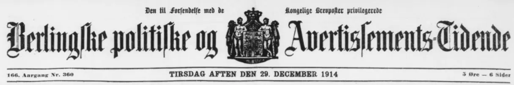
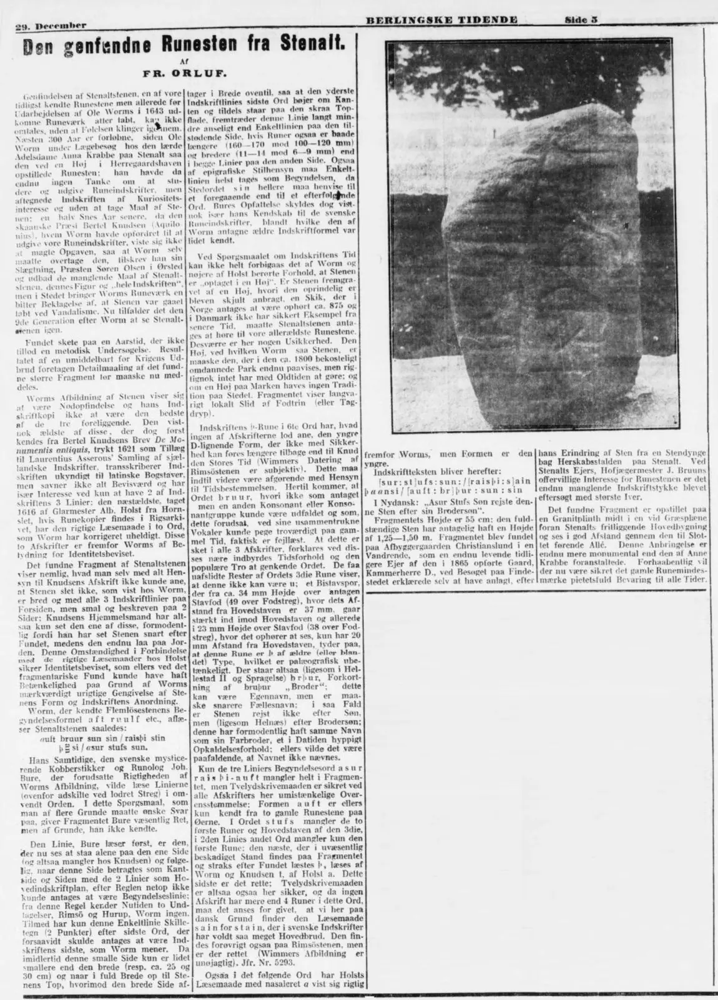
Marius Kristensen (*27.04.1869 - 02.11.1941, Dr. phil. Hochschullehrer, Dänischer Sprachforscher - link-LIVES - Begravelsesprotokoller)
 Bildquelle:
Denstoredanske.lex -
Lizenz:
Public Domain
Bildquelle:
Denstoredanske.lex -
Lizenz:
Public Domain
geht in dem Werk "Nordisk Tidsskrift for Filologi, 1916" auf der S. 12ff. auf die Wiederentdeckung des Runensteins, seine Geschichte und Inschrift ein.
Johannes Brøndum-Nielsen (*02.12.1881 - 09.3.1977, Professor Dr. phil. für nordische Sprachen an der Universität Kopenhagen - link-LIVES)
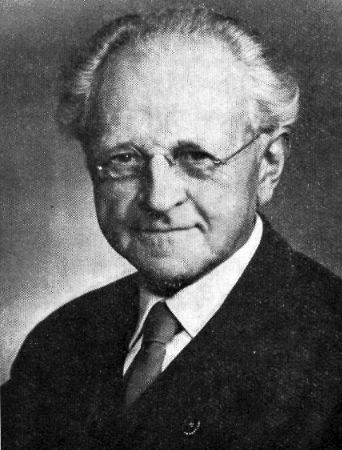
Bildquelle: Danske Studier 1978 - S. 5 - Lizenz: CC BY-NC-SA 4.0weist in Aarbøger for nordisk oldkyndighed og historie, 1917 auf der Seite 183, Fußnote 2, ganz kurz auf die Inschriftpassage "Bruur" auf dem Runenstein von Stenalt hin.
Durch Erik Moltke (*04.04.1901 - 19.10.1984, Runologe, Historiker - link-LIVES)
 Bildquelle: Scan von Buchumschlag "Runerne i Danmark og ders
oprindelse" - Erik Moltke - 1976 - Lizenz:
CC-BY-SA
Bildquelle: Scan von Buchumschlag "Runerne i Danmark og ders
oprindelse" - Erik Moltke - 1976 - Lizenz:
CC-BY-SA
wurde dieses Foto wohl am 07.06.1932 aufgenommen.
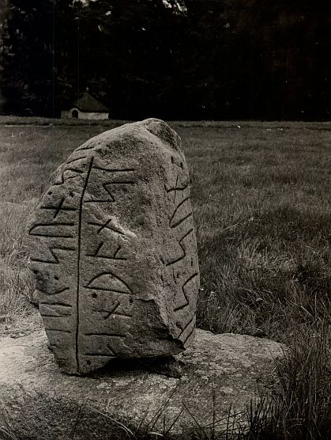
Digitale Sammlung Nationalmuseum Kopenhagen - Lizenz: CC-BY-SA
Im Vorfeld zu dem 2016 erschienenen Buch von Lisbeth M. Imer (*1973, Runologin am Nationalmuseum Kopenhagen) "Danmarks Runesten - en fortælling" reiste sie mit dem Fotografen Roberto Fortuna zur Bestandsaufnahme durch die Lande. Dieser hat den Runenstein mit Schräglicht bei Dunkelheit aufgenommen und darüber wirklich herausragende Fotos erzielt. Diese Fotografien stammen vom 14. März 2013.
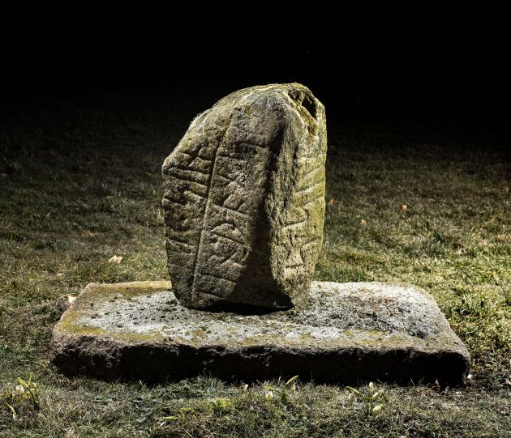
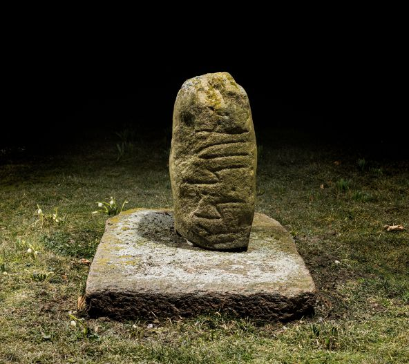
Digitale Sammlung Nationalmuseum Kopenhagen - Lizenz: CC-BY-SA
Die Informationen zu diesem Runenstein aus der dänischen Runendatenbank finden sich hier.
Der entsprechende Eintrag in "Fund og Fortidsminder" ist hier verlinkt. Darin eingebettet ist auch ein Zustandsbericht des Steinrestaurators Leif Vognsen aus 2018.
Über diesen Link finden sich zu dem Runenstein Informationen des Forschungsprojektes "Runes" der Akademie der Wissenschaften zu Göttingen.
Auf dieser Webseite des "Dansk Center for Herregårdsforskning" finden sich alle Informationen zum Herrenhof von Stenalt.
Die aktuelle Webseite des Herrenhofes Stenalt "Stenalt Land- und Forstwirtschaft" kann hier aufgerufen werden.
Literaturhinweise:
Aarsberetning for den historiske samling i Randers - for Aaret fra d. 1. April 1913 til d. 31. Marts 1914 - für den 22.10.1913 - S. 11 - 14 - Artikel von Herrn cand. mag. Frederik Orluf aus Vejle.
Anfahrt: Am einfachsten kommt man zum Herrenhof Stenalt, wenn man von Randers der Straße 16/21 in Richtung Grenaa folgt. Nach Fausing folgt man der Straße 547 in Richtung Allingåbro. Im nun folgenden Kreisverkehr fährt man über die Straße 531 in Richtung Ørsted. An der ersten Kreuzung (nach ca. 1 km) biegt man nach links in die rechte von zwei abgehenden Straßen (Rougsøvej) ab. Im weiteren Verlauf ist Stenalt ausgeschildert und man fährt dann direkt auf die Einfahrt des Herrenhofes zu.
Im Internet kann man heutzutage über Google Maps in der Kirche herumspazieren und sich ausführlich umschauen. Darüber habe ich mir heute - 21.09.2025 - auch einige Screenshots für meine o.a. Ausführungen besorgt. Die Kirche werde ich bei meiner nächsten Tour in der Gegend natürlich sehr gerne mal anschauen.